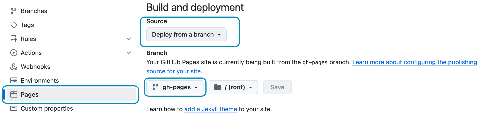

Build
This chapters shows how to prepare your Hydejack site for a production build and deployment on 3rd party hosting providers.
Building locally
When building Hydejack it is important to set the environment variable JEKYLL_ENV to production.
Otherwise the output will not be minified. Building itself happens via Jekyll’s build command.
$ JEKYLL_ENV=production bundle exec jekyll build
This will generate the finished static files in _site,
which can be deployed using the methods outlined in the Jekyll Documentation.
Building locally with latent semantic analysis
By default, related posts are simply the most recent posts.
Hydejack modifies this a bit, by showing the most recent posts of the same category or tag.
However, the results are still pretty “unrelated”.
To provide better results, Jekyll supports latent semantic analysis via classifier-reborn’s
Latent Semantic Indexer
To use the LSI, you first have to disable Hydejack’s default behavior,
by setting use_lsi: true under the hydejack key in your config file.
# file: `_config.yml`
hydejack:
use_lsi: true
Then, you have to run jekyll build with the --lsi flag:
$ JEKYLL_ENV=production bundle exec jekyll build --lsi
Note that this may take a long time.
Once it is finished, the generated static files will be located in the _site directory,
which can be deployed using the methods outlined in the Jekyll Documentation.
GitHub Pages
As of September 2024, you can deploy to GitHub Pages using a custom GitHub Action. You can read more about it in chapter Deploy.
If you’re using the Starter Kit based on the gh-pages branch, or the starter-kit-gh-pages folder from the PRO Version,
all you have to do is push your repository:
$ git add .
$ git commit "Update content"
$ git push origin gh-pages
Make sure Source is set to “Deploy from a branch” in the Pages section of the repository settings, and that the branch you’ve pushed to matches the one selected in the dropdown:

Ensure these settings are set to continue using the GitHub Pages legacy pipeline.
Continue with Deploy